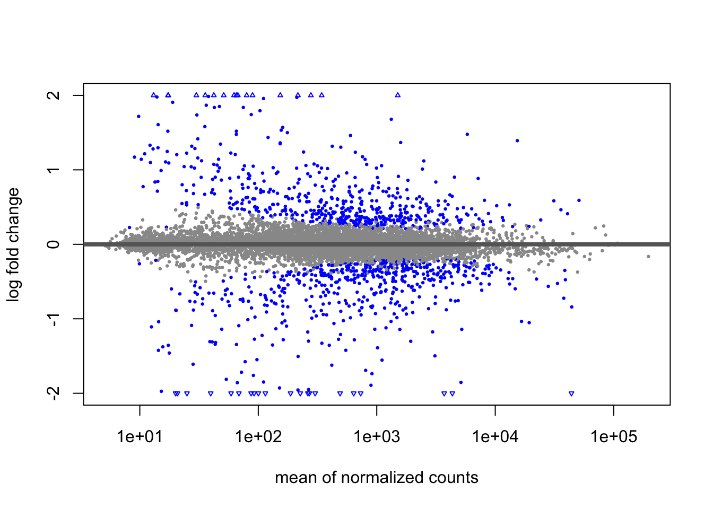

This report demonstrates how to perform a differential expression analysis using the DESeq2 R package.
We will use the pasilla dataset, which is based on an RNA-seq experiment in Drosophila melanogaster cell cultures.
The experiment investigated the effect of RNA interference (RNAi) knock-down of the splicing factor pasilla (Brooks et al., 2011). The dataset was generated using a count matrix and is available through the pasilla Bioconductor package.
We will identify genes that are significantly differentially expressed between two conditions:
cells treated with RNAi targeting pasilla, and untreated control cells.
# Load librarieslibrary("DESeq2")
Loading required package: S4Vectors
Loading required package: stats4
Loading required package: BiocGenerics
Attaching package: 'BiocGenerics'
The following objects are masked from 'package:stats':
IQR, mad, sd, var, xtabs
Welcome to Bioconductor
Vignettes contain introductory material; view with
'browseVignettes()'. To cite Bioconductor, see
'citation("Biobase")', and for packages 'citation("pkgname")'.
Attaching package: 'Biobase'
The following object is masked from 'package:MatrixGenerics':
rowMedians
The following objects are masked from 'package:matrixStats':
anyMissing, rowMedians
Warning: package 'BiocParallel' was built under R version 4.4.3
Loading required package: AnnotationDbi
Attaching package: 'AnnotationDbi'
The following object is masked from 'package:dplyr':
select
Loading required package: RColorBrewer
2. Loading and exploring the dataset
# Load count data and sample metadata from the pasilla packagepasCts <-system.file("extdata","pasilla_gene_counts.tsv",package="pasilla", mustWork=TRUE)pasAnno <-system.file("extdata","pasilla_sample_annotation.csv",package="pasilla", mustWork=TRUE)cts <-as.matrix(read.csv(pasCts,sep="\t",row.names="gene_id"))coldata <-read.csv(pasAnno, row.names=1)coldata <- coldata[,c("condition","type")]coldata$condition <-factor(coldata$condition, levels =c("untreated", "treated"))coldata$type <-factor(coldata$type)
# Ensure that sample names match between the count matrix and the metadatarownames(coldata) <-sub("fb", "", rownames(coldata))cts <- cts[, rownames(coldata)]all(rownames(coldata) ==colnames(cts))
# Extract results for the specific contrastres <-results(dds, name="condition_treated_vs_untreated")
# Apply shrinkage to log2 fold changesresLFC <-lfcShrink(dds, coef="condition_treated_vs_untreated", type="apeglm")
using 'apeglm' for LFC shrinkage. If used in published research, please cite:
Zhu, A., Ibrahim, J.G., Love, M.I. (2018) Heavy-tailed prior distributions for
sequence count data: removing the noise and preserving large differences.
Bioinformatics. https://doi.org/10.1093/bioinformatics/bty895
# Sort results by p-value to see the most significant genes at the top and summarize the DESeq2 outputresOrdered <- res[order(res$pvalue),]summary(res)
out of 8148 with nonzero total read count
adjusted p-value < 0.1
LFC > 0 (up) : 533, 6.5%
LFC < 0 (down) : 536, 6.6%
outliers [1] : 0, 0%
low counts [2] : 0, 0%
(mean count < 5)
[1] see 'cooksCutoff' argument of ?results
[2] see 'independentFiltering' argument of ?results
# summarize results using a stricter significance threshold (adjusted p-value < 0.05)res05 <-results(dds, alpha=0.05)summary(res05)
out of 8148 with nonzero total read count
adjusted p-value < 0.05
LFC > 0 (up) : 416, 5.1%
LFC < 0 (down) : 437, 5.4%
outliers [1] : 0, 0%
low counts [2] : 0, 0%
(mean count < 5)
[1] see 'cooksCutoff' argument of ?results
[2] see 'independentFiltering' argument of ?results
4. MA-plot
MA-plot of shrunken log2 fold changes
The MA-plot shows the log2 fold changes of gene expression between conditions, plotted against the mean of normalized counts. This version uses shrunken log2 fold changes, which help to reduce noise in low-count genes.
plotMA(resLFC, ylim=c(-2,2))

Significantly differentially expressed genes (adjusted p-value < 0.1) are shown in blue, while non-significant genes are shown in grey.
5. Exporting results
To focus on the most relevant genes, we filtered the results to include only those with an adjusted p-value (padj) below 0.1, indicating statistically significant differential expression between treated and untreated conditions. These filtered results were then exported as a CSV file. This file can be used for further downstream analysis or visualization.
To better understand the biological meaning of our results, we now explore the most significantly differentially expressed genes. These genes show both a strong fold change and a low adjusted p-value.
We display the top 10 genes with the strongest changes in expression (absolute log2 fold change). These genes are good candidates for further biological interpretation or validation.
We use a volcano plot and a heatmap to visualize the results of our differential expression analysis. These visualizations help identify genes with strong changes and show expression patterns across all samples.
The volcano plot displays the results of the differential expression analysis. Each point represents a gene, plotted by its log2 fold change (x-axis) and statistical significance (–log10 adjusted p-value, y-axis). Genes with an adjusted p-value < 0.1 are shown in red and considered significantly differentially expressed.
The heatmap shows the expression of the top 20 most significantly differentially expressed genes across all samples. Rows represent genes and columns represent samples. The color scale indicates the relative expression level of each gene. Sample annotations for condition (treated vs untreated) and sequencing type are displayed at the top. Genes with similar expression patterns and samples with similar profiles are grouped together.
Brooks AN, et al. (2011). Conservation of an RNA regulatory map between Drosophila and mammals. Genome Research.
Zhu, A., Ibrahim, J.G., Love, M.I. (2018) Heavy-tailed prior distributions for sequence count data: removing the noise and preserving large differences. Bioinformatics. https://doi.org/10.1093/bioinformatics/bty895